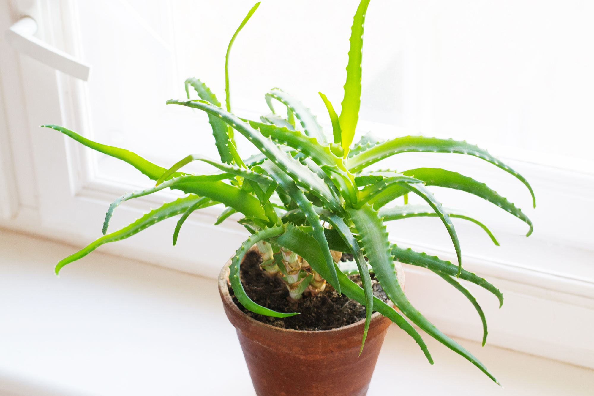
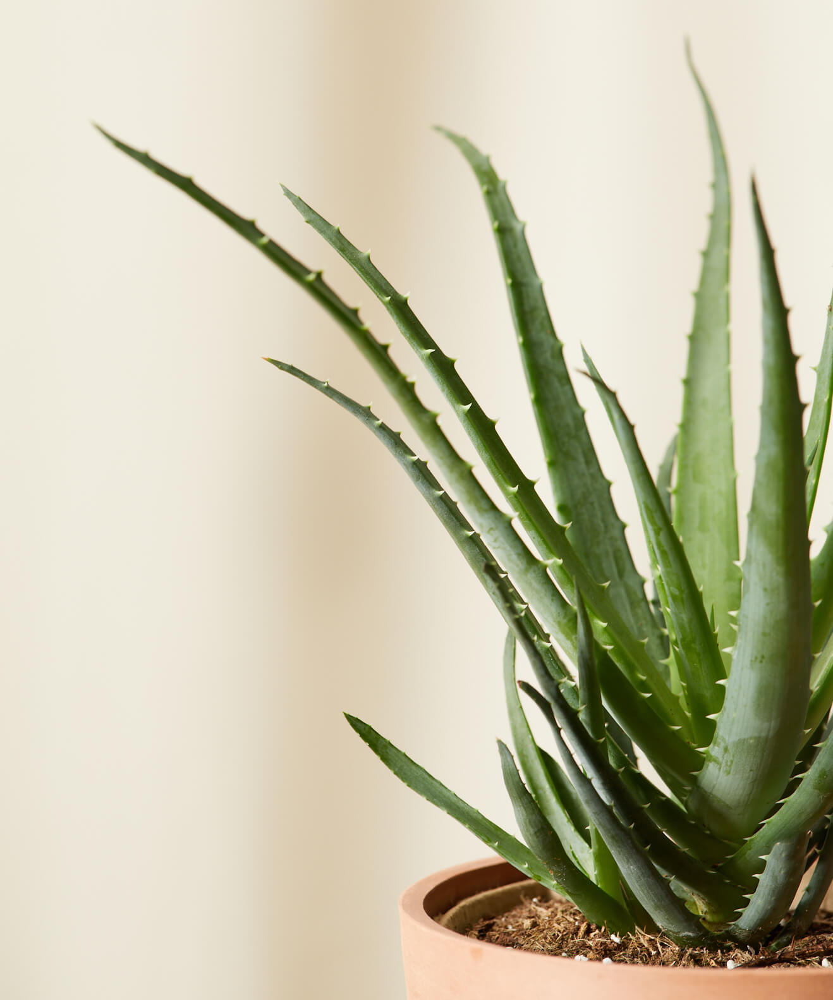
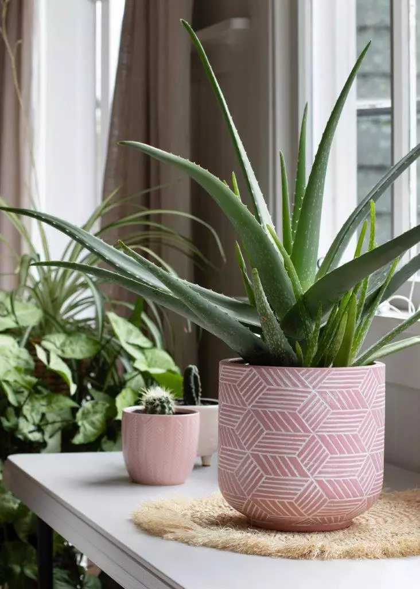

Aloe
Aloe vera is known as a succulent plant, which means it stores water in its leaves and stem. This makes it a hardy plant that needs very little water, allowing it to survive in dry environments. It has a very short stem with thick, fleshy, greenish leaves fanning out from it. These leaves are where you find the goodness in aloe vera.
One important thing in the care of aloe vera houseplants is that they have proper light. Aloe vera plants need bright light, so they do best in south or west-facing windows.
You can fertilize your aloe vera plant, but aloes generally don’t need to be fertilized. If you decide to add fertilizing as part of your aloe vera plant care routine, aloe vera plants should be fertilized once a year in the spring. You can use a phosphorus-heavy, water-based fertilizer at half strength.



Growing aloe vera houseplants is not only easy but can also provide your family with a plant that can help treat minor burns and rashes. Now that you know a little more about how to care for an aloe vera plant, you need never be without this lovely and helpful plant.